Centro de Cálculo de Álava, S.A.
Informe registro salarial 2025
Informe registro salarial del Centro de Cálculo de Álava 2025
Índice
Introducción
Esquema
En cumplimiento de lo establecido en el articulo 28 del Texto Refundido de la Ley del Estatuto de los Trabajadores, el Centro de Calculo de Alava, S.A., en adelante CCASA, ha elaborado el registro retributivo correspondiente al ejercicio 2025.
Este registro retributivo se ha hecho en el marco del Decreto 902/2020 cumpliendo las normas que este establece.
Misma jornada a lo largo del año.
Misma duración de los servicios prestados a lo largo del año.
› Leer el apartado completo
En cumplimiento de lo establecido en el articulo 28 del Texto Refundido de la Ley del Estatuto de los Trabajadores, el Centro de Calculo de Alava, S.A., en adelante CCASA, ha elaborado el registro retributivo correspondiente al ejercicio 2025. Para ello ha utilizado la herramienta de Registro Retributivo del Ministerio de Trabajo y Economia Social y Ministerio de Igualdad.
Este registro retributivo se ha hecho en el marco del Decreto 902/2020 cumpliendo las normas que este establece.
El registro retributivo debe incluir los valores medios -media aritmética y mediana- de salarios, complementos salariales y percepciones extrasalariales efectivamente percibidos por la plantilla durante el periodo de referencia, desglosados por sexo, y distribuidos por grupos profesionales, categorías profesionales, nivel, puesto o cualquier otro sistema de clasificación aplicable.
El registro debe recoger toda la información fidedigna acerca de las retribuciones efectivamente percibidas en el periodo de referencia por las personas trabajadoras en la empresa, para cada una de sus situaciones contractuales, y sus promedios y medianas deben estar desglosados por sexo, por categorías, grupos profesionales, niveles, puestos o cualquier otro sistema de clasificación que sea utilizado en la empresa.
La Herramienta del registro retributivo, además de la información fidedigna de las retribuciones efectivamente satisfechas y correspondientes a las diferentes situaciones contractuales agrupadas de acuerdo con el sistema de clasificación profesional de la empresa y durante el periodo de referencia del año natural desagregadas por sexo (importes efectivos), incluye la denominada “equiparación” (normalización y/o anualización) de las retribuciones, a fin proporcionar un dato adicional de comparabilidad (importes equiparables).
Para equiparar las retribuciones la herramienta utiliza los siguientes criterios de equiparación:
- Normalizar: Misma jornada a lo largo del año. Debe realizarse una normalización de las retribuciones a la misma jornada (jornada completa). Para ello se utiliza la metodología: “Normalizar” es transformar las cantidades de manera que resulten comparables atendiendo al criterio de porcentaje de jornada. Las cantidades por considerar serán para el caso de jornada completa. En el caso de que se estén incluyendo personas que no tengan jornada completa (por contrato, y/o por reducción de jornada), las retribuciones deberán aumentarse proporcionalmente hasta jornada completa.
- Anualizar: Misma duración de los servicios prestados a lo largo del año. Debe realizarse una anualización de las retribuciones percibidas en periodos inferiores al año. Para ello se utiliza la metodología: “Anualizar” Las cantidades a considerar serán para el año completo considerado (periodo de referencia). Las retribuciones efectivas deberán aumentarse proporcionalmente hasta el año.
La diferencia porcentual entre mujeres y hombres está calculada de la siguiente manera:
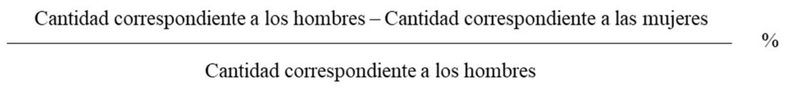
El resultado se expresa como un porcentaje. Si el valor es positivo, significa que la cantidad correspondiente a las mujeres es inferior a la de los hombres, en el porcentaje expresado. Si es negativo, la interpretación es la contraria.
Diferencias:
Justificadas
No estamos ante trabajos comparables (no son iguales o no tienen el mismo valor). Estando ante trabajos comparables, existe una razón objetiva que explica la diferencia:
- La situación del mercado de trabajo (STJCE 27‐10‐1993).
- La antigüedad en la empresa (STJUE 3‐10‐ 2006).
- La formación profesional (STJCE 11‐5‐ 1999).
- La flexibilidad (STJCE 17‐10‐1989).
- La fuerza física, siempre y cuando sea un factor efectivamente necesario y no opere como único elemento de valoración (STJCE 1‐7‐1986 y STC 250/2000).
- La productividad (STSJE 31‐5‐1995).
No justificadas:
- Que estamos ante categorías diferentes (STC 145/1991).
- Que los trabajadores realizan diferentes funciones (STC 58/1994).
- Que los trabajadores prestan servicios en diferentes departamentos (STS 14‐5‐2014, Rº 2328/2013).
- Que la desigualdad proviene de lo previsto en el convenio colectivo (SSTC 145/1991 y 147/1995).
- Que la desigualdad proviene de una situación heredada del empresario anterior (STSJ Canarias 21‐12‐2006, Rº 485/2006).
- Que no se han cumplido los objetivos por razones de conciliación (SSTS 9‐12‐2009, Rº 8/2008, 27‐5‐2015, Rº 103/2014, 10‐1‐2017, Rº283/2015 y 23‐9‐2020, Rº 70/2019)
En el caso de CCASA que cuenta con representación legal de las personas trabajadoras, el acceso al registro se facilitará a las personas trabajadoras a través de la citada representación, teniendo derecho aquellas a conocer el contenido íntegro del mismo.
Sistema de clasificación profesional
Esquema
En la empresa CCASA, se ha desarrollado un sistema de clasificación profesional desde hace algunos años (2016) que es el que actualmente está vigente. Este sistema parte de una definición de 23 perfiles profesionales y 12 niveles retributivos.
Cada perfil profesional tiene asignados 3 niveles retributivos consecutivos, como se muestra en la Relación de Puestos de Trabajo de 2025, según el nivel de responsabilidad dentro de cada perfil.
› Leer el apartado completo
En la empresa CCASA, se ha desarrollado un sistema de clasificación profesional desde hace algunos años (2016) que es el que actualmente está vigente. Este sistema parte de una definición de 23 perfiles profesionales y 12 niveles retributivos.
Cada perfil profesional tiene asignados 3 niveles retributivos consecutivos, como se muestra en la Relación de Puestos de Trabajo de 2025, según el nivel de responsabilidad dentro de cada perfil. Lo normal es que cuando una persona entra en la empresa se le asigna el primer nivel de la franja correspondiente a su perfil profesional y luego va subiendo a los siguientes niveles. Esto queda reflejado de la siguiente manera en el Convenio colectivo, en el artículo 17.
Artículo 17.- PERFILES PROFESIONALES Y NIVELES DE DESARROLLO
A) Cada empleado o empleada tendrá asignado un perfil profesional determinado según la actividad que desarrolle en su trabajo, el cual figurará en el recibo de nómina.
B) Cada uno de los perfiles profesionales existentes en CCASA posee un recorrido de niveles determinado.
C) Se establece en el documento adjunto como Anexo I la relación de perfiles profesionales y niveles de desarrollo del CCASA. En líneas generales, todos los perfiles de la empresa se distribuirán en diferentes recorridos, dentro de los 12 niveles establecidos. Asimismo, se establece en el Anexo II, los importes de salario base y complemento de nivel correspondientes a 2017.
D) Cuando a un empleado o a una empleada se le asigne uno de los perfiles profesionales existentes, se le notificará el recorrido de niveles que corresponde con su perfil, así como su situación en los mismos,
E) Corresponde a la Empresa el establecimiento de un organigrama de puestos existentes, así como una definición, de las funciones relativas a cada perfil profesional.
(Acuerdo convenio colectivo del CCASA 2020 / 2021)
La agrupación según la clasificación profesional de la empresa se muestra en la siguiente tabla:
| GRUPO 1 | RESP. DE DPTO./ÁREA |
|---|---|
| GRUPO 2 | RESP. UNIDAD FOCAL |
| GRUPO 3 | JEFATURA DE PROYECTO |
| GRUPO 4 | COORDINACIÓN ADMÓN Y RRHH |
| GRUPO 5 | CONSULTORÍA |
| GRUPO 6 | ANALISTA DE SISTEMAS |
| GRUPO 7 | ANALISTA DE SISTEMAS UT |
| GRUPO 8 | ANALISTA FUNCIONAL |
| GRUPO 9 | ANALISTA DE SEGURIDAD |
| GRUPO 10 | ARQUITECTO/A PLATAFORMA TECNOLÓGICA |
| GRUPO 11 | GESTIÓN DE CALIDAD |
| GRUPO 12 | PROGRAMACIÓN |
| GRUPO 13 | TÉCNICO ADMÓN GENERAL |
| GRUPO 14 | ESPECIALISTA SOPORTE MICROINFORMÁTICO |
| GRUPO 15 | DISEÑADOR/A IU/UX |
| GRUPO 16 | TÉCNICA COMPRAS |
| GRUPO 17 | GESTIÓN DE SERVICIOS |
| GRUPO 18 | TÉCNICO/A DE PRODUCCIÓN |
| GRUPO 19 | TÉCNICO/A DE SISTEMAS |
| GRUPO 20 | TÉCNICO/A DE SOPORTE MICROINFORMÁTICO |
| GRUPO 21 | TÉCNICO/A DE CAU |
| GRUPO 22 | PERSONAL ADMINISTRATIVO |
| GRUPO 23 | CHOFER/ORDENANZA |
| GRUPO 30 | DIRECTOR/A-GERENTE |
Sistema retributivo
Esquema
La empresa CCASA dispone de un sistema retributivo regulado por Convenio Colectivo. Este sistema retributivo se regula en el Artículo 18 del Convenio Colectivo.
Los importes efectivos tienen carácter obligatorio mientras que los importes equiparados tienen carácter voluntario.
› Leer el apartado completo
CONCEPTOS RETRIBUTIVOS La empresa CCASA dispone de un sistema retributivo regulado por Convenio Colectivo. Este sistema retributivo se regula en el Artículo 18 del Convenio Colectivo.
RETRIBUCIONES. DEFINICIONES
1. Los importes anuales se distribuirán en 12 mensualidades naturales más una paga extraordinaria en junio y otra en Navidad.
2. Las mensualidades se abonarán al personal empleado antes del día 30 del mes en curso.
3. Las pagas extraordinarias se abonarán los meses de junio y diciembre y en proporción a los días trabajados en el primer semestre del año la de Junio y en el segundo semestre del año la correspondiente a Navidad.
4. Cada perfil profesional tendrá una estructura compuesta por Salario Base, que será el mismo para todos los perfiles profesionales de la empresa y un Complemento de Nivel, que va en función del nivel dentro de cada perfil.
5. Conceptos retributivos:
A) Sueldo base. - Será único para todos los perfiles profesionales de la empresa.
B) Complemento de nivel. - Es un concepto directamente relacionado con cada uno de los niveles establecidos, dentro de los recorridos posibles de los perfiles profesionales.
C) Complemento de tareas. - Establecido para aquellas personas a las que temporalmente les sean asignadas tareas de especial responsabilidad.
D) Plus salarial de mantenimiento de vestuario para el perfil profesional de chofer-choferesa/ordenanza. - Establecido como compensación de gastos que obligatoriamente correrán a cargo del o de la profesional en concepto de adquisición y conservación de su ropa de trabajo.
E) Antigüedad. - Se contabilizará por trienios y se comenzará a abonar en el mes en el que se cumpla el trienio.
F) Complemento personal. - Para su percepción habrán de reunirse los siguientes requisitos: formar parte de la plantilla del CCASA en el momento de la entrada en vigor del presente convenio, estar percibiendo cantidades superiores a las que resulten de aplicación por el sistema de niveles. No se hará extensivo en un futuro a ninguna otra persona que forme parte de la plantilla del CCASA, y no aumentará en su importe.
Los conceptos retributivos que se han tenido en cuenta en el registro retributivo se recogen en la siguiente tabla:
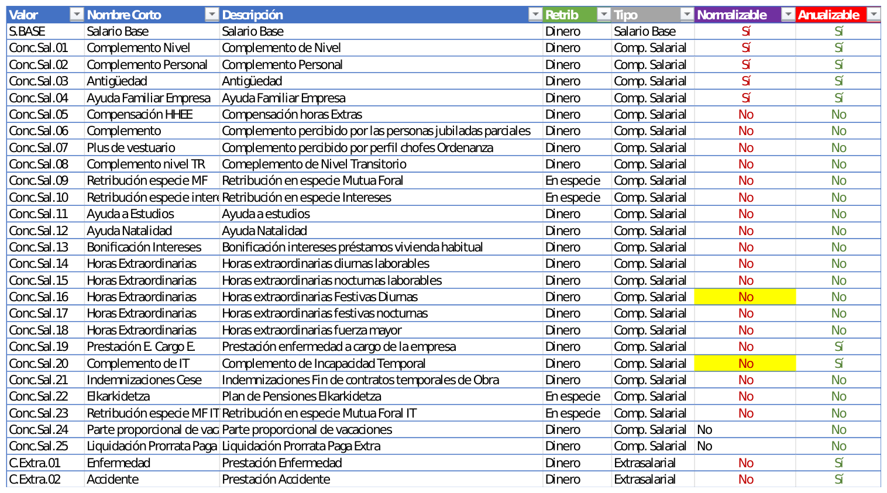
En el caso de CCASA se han realizado dos tipos de análisis.
1. ANÁLISIS 1: Retribuciones efectivas
El registro debe recoger toda la información fidedigna acerca de las retribuciones efectivamente percibidas en el periodo de referencia por las personas trabajadoras en la empresa, para cada una de sus situaciones contractuales, y sus promedios y medianas deben estar desglosados por sexo, por categorías, grupos profesionales, niveles, puestos o cualquier otro sistema de clasificación que sea utilizado en la empresa.
En definitiva, los datos retributivos deben estar agrupados o distribuidos en función del sistema de clasificación profesional que exista en la empresa.
2. ANÁLISIS 2 Retribuciones equiparadas.
La Herramienta del registro retributivo, además de la información fidedigna de las retribuciones efectivamente satisfechas y correspondientes a las diferentes situaciones contractuales agrupadas de acuerdo con el sistema de clasificación profesional de la empresa y durante el periodo de referencia del año natural desagregadas por sexo (importes efectivos), incluye la denominada “equiparación” (normalización y/o anualización) de las retribuciones, a fin proporcionar un dato adicional de comparabilidad (importes equiparables).
Criterios de equiparación
A. Misma jornada a lo largo del año. Debe realizarse una normalización de las retribuciones a la misma jornada (jornada completa).
• Supuestos:
- Personas con contrato a tiempo parcial. (Personal jubilado a tiempo parcial)
- Reducciones de jornada.
No así el complemento de jubilación, ya que, al normalizarlo, distorsiona la realidad, estableciendo una retribución para esa persona mucho más alta de lo que realmente le correspondería por estar al 100% de jornada.
• Metodología: “Normalizar” es transformar las cantidades de manera que resulten comparables atendiendo al criterio de porcentaje de jornada. Las cantidades a considerar serán para el caso de jornada completa. En el caso de que se estén incluyendo personas que no tengan jornada completa (por contrato, y/o por reducción de jornada), las retribuciones deberán aumentarse proporcionalmente hasta jornada completa. Ejemplos:
- Si una persona tiene una retribución efectiva de 2.000 € mensuales con un contrato del 80% de jornada, su salario deberá “normalizarse” multiplicándose por 1,25 (1/80% = 1,25), por lo que la retribución normalizada será de 2.500 €.
- Si una persona tiene una retribución efectiva de 1.500 € por una jornada del 100%, tendría la misma retribución normalizada que una persona que, trabajando con una jornada del 50%, cobrase 750 €. La normalización de la cifra de 750 € se haría dividiendo esa cantidad entre 50%, lo que da el resultado de 1.500 € (de modo que las cantidades normalizadas serían iguales, en este caso).
B. Misma duración de los servicios prestados a lo largo del año. Debe realizarse una anualización de las retribuciones percibidas en periodos inferiores al año.
• Supuestos:
- Contratos de duración determinada de personas que no hayan estado contratadas durante todo el año por haber sido contratadas una vez iniciado el mismo o haber extinguido sus contratos antes de finalizar el año.
- Personas que se encuentran en situación de suspensión del contrato por cualquier causa del art. 45 ET o excedencia en algún momento del año.
• Metodología: Las cantidades a considerar serán para el año completo considerado (periodo de referencia). Las retribuciones efectivas deberán aumentarse proporcionalmente hasta el año (por ejemplo, si una persona ha estado empleada por 6 meses, su retribución deberá “anualizarse” multiplicándose por 2).
A los únicos efectos de poder realizar y facilitar la comparabilidad y aplicar los criterios de equiparación descritos, cuando una persona haya tenido más de una situación contractual diferente en el período de referencia, se tendrá en cuenta la última.
Es posible que haya algunos conceptos retributivos que no estén sujetos a este ajuste (que no sean normalizables ni anualizables) porque la empresa los abone íntegramente a todas las personas trabajadoras independientemente de la jornada efectiva trabajada o periodo trabajado, lo que se deberá indicar oportunamente.
Algunos ejemplos pueden ser (si aplica en cada caso): Ayuda familiar, ayuda a estudios, retribución en especie, horas extras y Elkarkidetza, las diferencias obedecen a las diferentes situaciones personales que son accesibles a las personas que cumplan unos determinados requisitos del convenio o el abono íntegro del Complemento para las personas jubiladas a tiempo parcial. Tampoco resulta procedente anualizarlas, siendo más fiel y realista tener en cuenta las retribuciones efectivas por estos conceptos.
Los importes efectivos tienen carácter obligatorio mientras que los importes equiparados tienen carácter voluntario.
El registro deberá incluir la justificación a que se refiere el artículo 28.3 del Estatuto de los Trabajadores, cuando la media aritmética o la mediana de las retribuciones totales en la empresa de las personas trabajadoras de un sexo sea superior a las del otro en, al menos, un veinticinco por ciento.
Con lo cual, en este diagnóstico se recogen a continuación, los datos extraídos con ambos análisis.
Resultados registro retributivo ejercicio 2025
Esquema
Se observa en CCASA una brecha salarial total de 1 punto porcentual (-1 punto porcentual en los valores equiparables) a favor de los hombres. Este dato está por debajo de la brecha salarial de la CAE que es de 24%. Aun así, es preciso seguir avanzando para eliminarla por completo.
Se observa que las brechas salariales por perfil referidas a salario base y complemento de nivel se deben fundamentalmente a: excedencias, bajas médicas, permisos de maternidad y reducciones de jornadas por cuidados, estas dos últimas a las que se han acogido principalmente las mujeres.
› Leer el apartado completo
Promedio y Mediana
- El promedio de un conjunto de valores se obtiene al dividir la suma de todos ellos por el número de valores.
- La mediana de un conjunto de valores es el valor que ocupa la posición central al ordenarlos de menor a mayor.
Medias y Medianas total retribuciones efectivas del total de la plantilla según sexo:
En 2021| Mujeres | Hombres | |
|---|---|---|
| MEDIA | 43.614 € | 46.223 € |
| MEDIANA | 46.640 € | 50.079 € |
| Mujeres | Hombres | |
|---|---|---|
| MEDIA | 46.362 € | 48.256 € |
| MEDIANA | 50.068 € | 52.901 € |
| Mujeres | Hombres | |
|---|---|---|
| MEDIA | 52.596 € | 53.229 € |
| MEDIANA | 55.497 € | 55.440 € |
| Mujeres | Hombres | |
|---|---|---|
| MEDIA | 42.433 | 44.064 |
| MEDIANA | 42.456 | 47.107 |
Medias y Brechas salariales en el total de la plantilla y por perfiles profesional 2021-2025:
Importes efectivos:
En 2021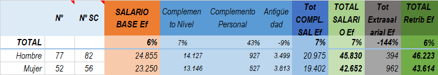
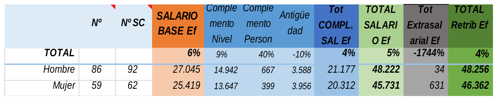
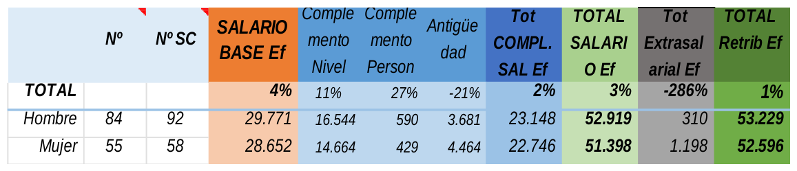
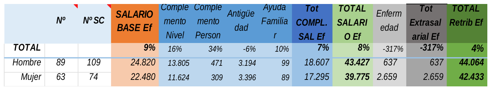
Medias y Brechas salariales en el total de la plantilla y por perfiles profesionales:
Importes equiparados:
En 2021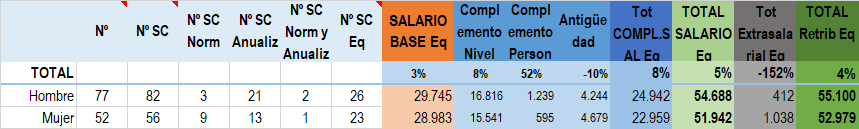
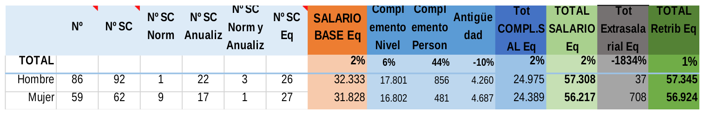
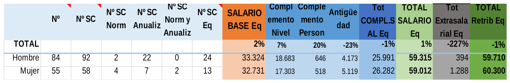
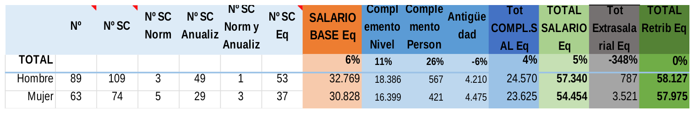
- Nº: Número de trabajadores/as
- Nº SC: Numero de situaciones contractuales diferentes dentro del periodo de referencia
- Nº SC Norm: Numero de situaciones contractuales normalizadas
- Nº SC Anualiz: Numero de situaciones contractuales anualizadas
- Nº SC Norm y Anualiz: Numero de situaciones contractuales normalizadas y anualizadas
- Nº SC Eq: Numero de situaciones contractuales que son objeto de equiparación.
Se observa en CCASA una brecha salarial total de 1 punto porcentual (-1 punto porcentual en los valores equiparables) a favor de los hombres. Este dato está por debajo de la brecha salarial de la CAE que es de 24%. Aun así, es preciso seguir avanzando para eliminarla por completo. Se observa la tendencia descendente desde con respecto al último registro retributivo de 2021. Para ello, se procede a un análisis de las brechas salariales por niveles para así identificar dónde pueden estar las principales causas de estas. En las siguientes tablas se muestran estos datos. En ella se marcan:
- Con color naranja a aquellas brechas que están entre 0 y + 25 (favorables a los hombres) o -25 (favorables a las mujeres),
- Con color rojo las que están por encima (favorables a los hombres) o por debajo (favorables a las mujeres) de los 25
- Y en verde las que son 0.
Además, en aquellos perfiles en los que hay un solo sexo representado, no procede análisis de brecha salarial por perfil profesional.
Se observa que las brechas salariales por perfil referidas a salario base y complemento de nivel se deben fundamentalmente a: excedencias, bajas médicas, permisos de maternidad y reducciones de jornadas por cuidados, estas dos últimas a las que se han acogido principalmente las mujeres.
En cuanto al resto de conceptos retributivos: Ayuda familiar, Compensación de horas extras, Plus de vestuario, Retribución en especie Mutua Foral, Retribución en especie intereses, Ayuda a estudios, y horas extraordinarias no procede su equiparación, al no depender de la situación contractual de la persona, ni tampoco de su jornada. Las diferencias se deben a las diferentes situaciones personales de las personas en función del acceso a determinadas ayudas recogidas en el Convenio y que se reflejan en nómina.
Tampoco procede el complemento para personas con jubilación parcial al 25% al tratarse de un complemento al 93 % de su salario bruto anual, por lo que, al normalizarlo, distorsiona la realidad, estableciendo una retribución para esa persona mucho más alta de lo que realmente le correspondería por estar al 100% de jornada
Medias valores efectivos en 2021:
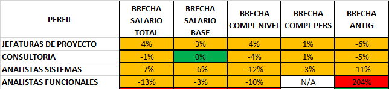
Medias valores efectivos en 2023:
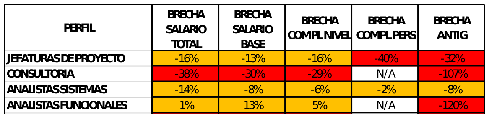
Medias valores efectivos en 2024:
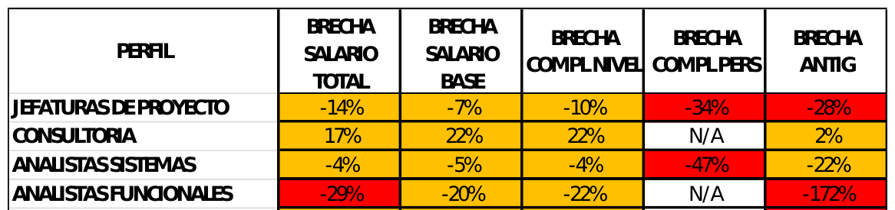
Medias valores efectivos en 2025
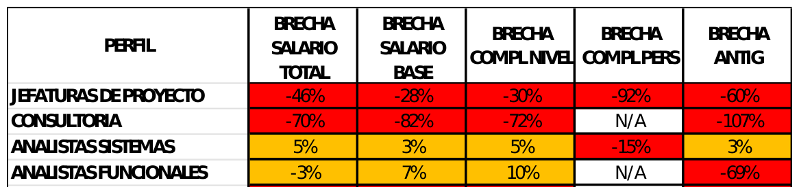
Media valores equiparados en 2021:
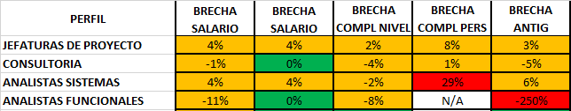
Media valores equiparados en 2023:
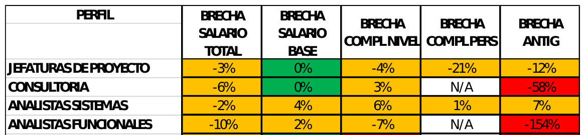
Media valores equiparados en 2024:
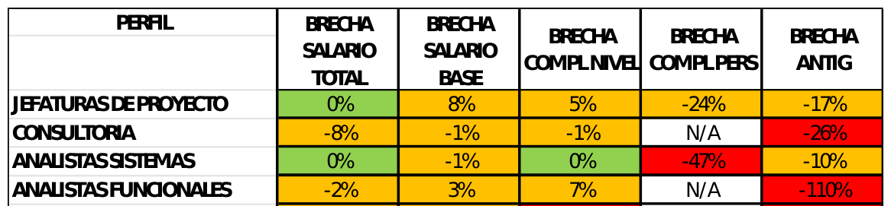
Media valores equiparados en 2025:
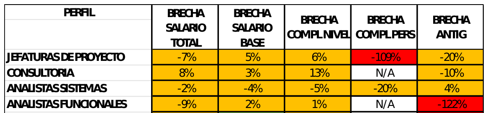
ESCALA 01 O GRUPO PROFESIONAL 01 RESPONSABLES DE ÁREA
ESCALA 03 O GRUPO PROFESIONAL 03 JEFATURAS DE PROYECTO
Las diferencias en el salario base y complementos salariales efectivos:
Se reducen, e incluso se invierten, al tener en cuenta los valores equiparados. En cuanto a la diferencia del salario base y de los complementos salariales equiparados, se observan los siguientes aspectos:
- Complemento de Nivel: De las seis JP mujeres, únicamente una está en el N3, frente a 4 JP hombres que están en el N3 (de 15 JP hombres)
- En el contrato de relevo, no procede el cómputo del Complemento, para la brecha salarial, al ser un concepto retributivo que no puede anualizarse.
- Resulta reseñable que la brecha resultante en antigüedad es a favor de las mujeres debido a que las jefaturas de proyecto más noveles son todas ocupadas por hombres.
- Igualmente, el complemento personal es a favor de las mujeres
ESCALA 05 O GRUPO PROFESIONAL 05 CONSULTORÍA
Las diferencias en los salarios efectivos a favor de las mujeres se deben a los siguientes motivos:
Las diferencias de las retribuciones una vez equiparadas se reducen e incluso se invierten al tener en cuenta los valores equiparados.
ESCALA 06 O GRUPO PROFESIONAL 06 ANALISTAS DE SISTEMAS
Las diferencias en el salario base y complementos salariales en las retribuciones efectivas, se deben a los siguientes motivos:
Con la equiparación, las diferencias efectivas se reducen e incluso se invierten debido a los siguientes motivos:
Todavía persiste, la diferencia en el complemento personal.
ESCALA 07 O GRUPO PROFESIONAL 07 ANALISTAS DE SISTEMAS UT
ESCALA 08 O GRUPO PROFESIONAL 08 ANALISTAS FUNCIONALES
Las diferencias en el Salario base y complementos salariales efectivos se deben a lo siguiente:
- El complemento de antigüedad es superior en este colectivo de mujeres.
- Resumen: 7 mujeres y 5 hombres en el N5
Pero las diferencias en los complementos salariales se reducen, e incluso se revierten, al tener en cuenta los valores equiparados.
Ello es debido a que:
- Se anualizan las altas y bajas a lo largo del año 2025, tanto de nuevas incorporaciones como de promociones internas.
- Es reseñable la mayor antigüedad de las mujeres.
En cuanto a la diferencia del salario base y de los complementos salariales equiparados, se observan los siguientes aspectos:
- La situación de cinco hombres que se han incorporado entre 2023-2024 y 2025 y que se han mantenido todo el año en el Nivel 5 que es su N1).
- En el contrato de relevo, no procede el cómputo del Complemento, para la brecha salarial, al ser un concepto retributivo que no puede anualizarse.
ESCALA 09 O GRUPO PROFESIONAL 09 ANALISTAS DE SEGURIDAD
ESCALA 12 O GRUPO PROFESIONAL 12 PROGRAMADORES/AS
ESCALA 18 O GRUPO PROFESIONAL 18 TÉCNICOS/AS DE PRODUCCIÓN
Conclusiones clasificación profesional, retribuciones y autorías salariales
Esquema
- Sistema retributivo y clasificación profesional objetiva y transparente.
- Se dispone de un registro retributivo de toda la plantilla con análisis de medias, medianas y brechas totales y por perfiles.
- Brecha salarial total por debajo de la brecha de la CAE, 1 puntos porcentual (-1 punto porcentual en valores equiparables).
- La brecha salarial en el salario base se elimina o se reduce sensiblemente al calcular los valores equiparables.
- Respecto a la brecha salarial en los complementos salariales la mayor brecha salarial se da en el complemento personal y en el complemento de antigüedad.
- Los responsables de área y de Unidad focal son casi todos hombres
- Las nuevas incorporaciones son mayoritariamente hombres
› Leer el apartado completo
- Sistema retributivo y clasificación profesional objetiva y transparente.
- Se dispone de un registro retributivo de toda la plantilla con análisis de medias, medianas y brechas totales y por perfiles.
- Brecha salarial total por debajo de la brecha de la CAE, 1 puntos porcentual (-1 punto porcentual en valores equiparables).
- La brecha salarial en el salario base se elimina o se reduce sensiblemente al calcular los valores equiparables.
- Respecto a la brecha salarial en los complementos salariales la mayor brecha salarial se da en el complemento personal y en el complemento de antigüedad.
- Los responsables de área y de Unidad focal son casi todos hombres
- Las nuevas incorporaciones son mayoritariamente hombres
Propuestas que disminuyan la diferencia salarial
Esquema
Dado que una de las principales causas de que exista diferencia salarial en algunos perfiles profesionales del CCASA es la existencia del complemento personal, resulta imprescindible mantener la política de continuar disminuyendo la presencia del mismo en la empresa.
Continuar con la política de transparencia en las promociones internas del CCASA.
Igualmente, resulta imprescindible mantener una descripción y clasificación de los puestos de trabajo.
Revisar anualmente, a través de registro salarial, la evolución del resultado de la brecha salarial.
› Leer el apartado completo
Ya en su momento, en 2016, CCASA optó por establecer un sistema de bandas salariales por grupos profesionales, inexistentes hasta la fecha.
Así se recogió en el artículo 18 del convenio de CCASA, que dio lugar a la creación de un complemento personal a determinadas personas que, en el momento de entrada en vigor del convenio, y que, como consecuencia del establecimiento del mencionado sistema retributivo de niveles, estaban percibiendo cantidades superiores a las que resultaban de aplicación.
Resulta de vital importancia mantener la obligatoriedad del convenio de que no se haga extensivo en un futuro a ninguna otra persona que forme parte de la plantilla del CCASA, así como no incrementar su importe.
Dado que una de las principales causas de que exista diferencia salarial en algunos perfiles profesionales del CCASA es la existencia del complemento personal, resulta imprescindible mantener la política de continuar disminuyendo la presencia del mismo en la empresa.
Nuevas incorporaciones y promociones internas: Resulta igualmente importante mantener la política retributiva de progresos de nivel (de N1 a N2) en personas recién incorporadas o personas recién promocionadas a perfiles profesionales de mayor recorrido en niveles retributivos para evitar que se generen diferencias salariales injustificadas.
Continuar con la política de transparencia en las promociones internas del CCASA.
Igualmente, resulta imprescindible mantener una descripción y clasificación de los puestos de trabajo.
Revisar anualmente, a través de registro salarial, la evolución del resultado de la brecha salarial.
Cuestiones legales de interés
Esquema
La herramienta permite informar hasta 30 conceptos salariales y hasta 5 conceptos extrasalariales, permitiendo su agrupación únicamente en el supuesto de que existieran más.
Además, si el promedio de las retribuciones de las personas trabajadoras de un sexo es superior a las del otro en un 25% o más, tomando el conjunto de la masa salarial o la media de las percepciones satisfechas, la empresa debe incluir en el registro una justificación de que dicha diferencia responde a motivos no relacionados con el sexo.
› Leer el apartado completo
Registro de empresas con auditoría retributiva:
Las empresas con auditoría retributiva deben incluir los promedios y medianas de las retribuciones de las agrupaciones que resulten del proceso de valoración de puestos de trabajo —puestos de igual valor— convenientemente desglosados por sexo, e incluyendo todas las retribuciones efectivamente satisfechas desagregadas en atención a la naturaleza de la retribución, incluyendo salario base, cada uno de los complementos y cada una de las percepciones extrasalariales, especificando de modo diferenciado cada percepción.
Agrupación de conceptos retributivos
— Art. 28.2 ET: “El empresario está obligado a llevar un registro con los valores medios de los salarios, los complementos salariales y las percepciones extrasalariales de su plantilla, desagregados por sexo y distribuidos por grupos profesionales, categorías profesionales o puestos de trabajo iguales o de igual valor”.
— Art. 5.2 RD 902/2020: “A su vez, esa información deberá estar desagregada en atención a la naturaleza de la retribución, incluyendo salario base, cada uno de los complementos y cada una de las percepciones extrasalariales, especificando de modo diferenciado cada percepción”.
— Guía de uso de la herramienta retributiva: El registro “deberá proporcionar información sobre todos y cada uno de los conceptos retributivos que abonen las empresas, sin agruparlos”.
La herramienta permite informar hasta 30 conceptos salariales y hasta 5 conceptos extrasalariales, permitiendo su agrupación únicamente en el supuesto de que existieran más. En tal caso, se agruparán: a) “lo estrictamente necesario (esto es, utilizando en todo caso los 30 disponibles); y b) “atendiendo a un criterio de similitud entre ellos”.
La retribución en concepto de “horas extraordinarias” y “horas complementarias”, debe incluirse en el registro al tratarse de complementos salariales por cantidad de trabajo y deben ser incluidos en el registro como un concepto específico.
- Las pagas extras no se informan como un complemento salarial independiente, sino que su cuantía se sumaría a los conceptos que integran.
- También hay que reflejar las indemnizaciones por despido ya que la norma no prevé excepciones con respecto a los conceptos que deben ser informados en el registro.
Información sobre los cambios de puesto
— Retribuciones efectivas: “Una misma persona puede por tanto aparecer en varias líneas, tantas como situaciones contractuales diferentes haya tenido durante el período de referencia.”
— Retribuciones equiparadas: “cuando una persona haya tenido más de una situación contractual diferente en el período de referencia, se tendrá en cuenta la última”.
Información adicional que debe contener el registro retributivo de las empresas con auditoría retributiva
El registro retributivo de las empresas que hayan de realizar una auditoría retributiva debe reflejar las medias aritméticas y las medianas de las agrupaciones de los trabajos de igual valor en la empresa, conforme a los resultados de la evaluación de puestos de trabajo llevada a cabo por la empresa en el marco de aquélla.
Además, si el promedio de las retribuciones de las personas trabajadoras de un sexo es superior a las del otro en un 25% o más, tomando el conjunto de la masa salarial o la media de las percepciones satisfechas, la empresa debe incluir en el registro una justificación de que dicha diferencia responde a motivos no relacionados con el sexo.
Novedad 2025: análisis por escalas o niveles retributivos
Esquema
Este año se ha incluido por primera vez el análisis según los complementos de nivel.
Dentro de cada nivel o escala se encuentran agrupados los distintos perfiles profesionales en la empresa.
› Leer el apartado completo
Análisis por escalas o niveles retributivos:
Este año se ha incluido por primera vez el análisis según los complementos de nivel.
Dentro de cada nivel o escala se encuentran agrupados los distintos perfiles profesionales en la empresa.
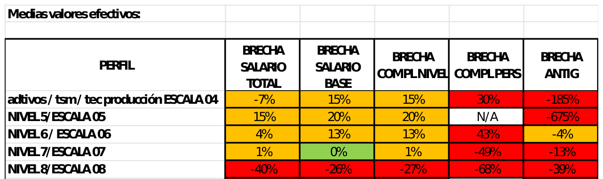
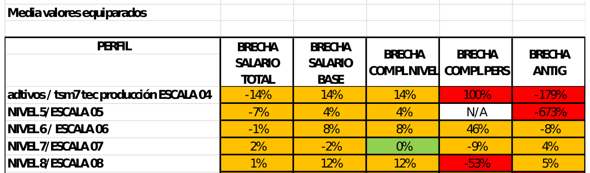